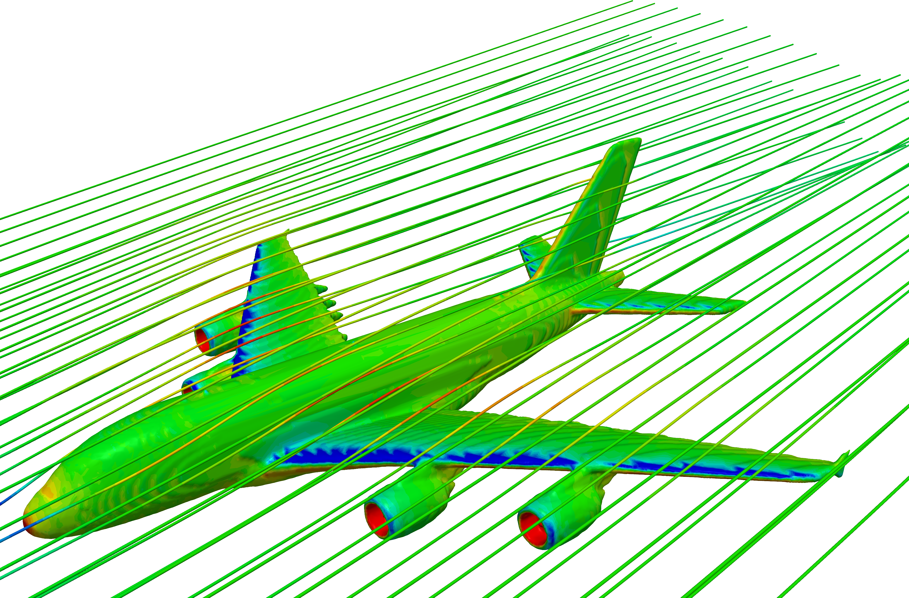

Air speeds up over the top of the wing, so its pressure drops (the blue band) and the wing is pulled upward. We solved this airflow around a full-size Airbus A380 at nine angles, using the Navier–Stokes equations.

In steady flight, lift equals the plane’s weight, so drag = weight ÷ (L/D). The angle with the highest lift-to-drag ratio burns the least fuel and puts out the least CO₂. Turn the knob on the screen to tilt the wing.
Build resilient infrastructure, promote inclusive and sustainable industrialisation, and foster innovation.